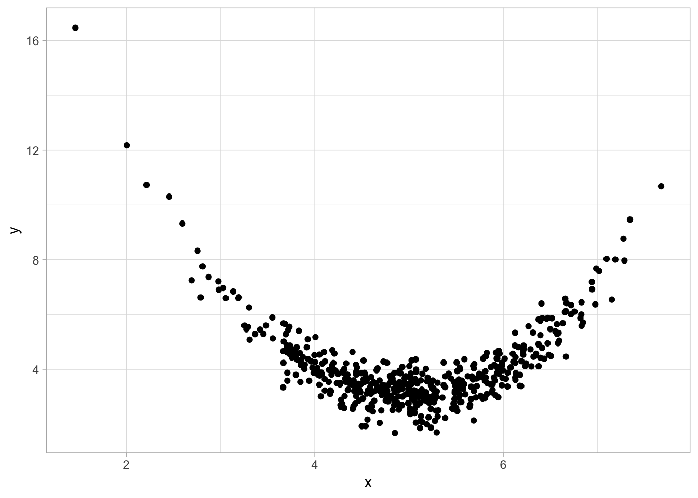

Chapter 7 Advanced Regression
7.1 Multivariate Regression
set.seed(1)
x<-rnorm(500,10,2)
z<-runif(500,10,20)
y<-rnorm(500,2*x*z,2)
year<-sample(seq(2000,2018,1),500,replace=TRUE)
# generate categorical variables
# make a shape variable
shapes<-c("square","circle","triangle","rectangle","trapezoid")
shape<-sample(shapes,500,replace=TRUE) # sample 500 random draws with replacement from shapes
# make a region variable
regions<-c("north","south","east","west")
region<-sample(regions,500,replace=TRUE) # sample 500 random draws with replacement from regions
# make a dummy variable
yes<-sample(c(0,1),500,replace=TRUE)
# combine into dataframe called df
df<-data.frame(x=x,
y=y,
z=z,
shape=factor(shape),
region=factor(region),
yes=yes,
year=factor(year))
# look at new df
head(df)## x y z shape region yes year
## 1 8.747092 264.8931 15.30809 trapezoid east 0 2009
## 2 10.367287 347.6574 16.84861 triangle west 1 2001
## 3 8.328743 227.9193 13.83283 square east 0 2016
## 4 13.190562 517.0824 19.54988 circle east 0 2008
## 5 10.659016 235.8301 11.18357 trapezoid north 1 2018
## 6 8.359063 169.6481 10.39100 trapezoid west 0 2009It is quite simply to simply add additional covariates to a regression. In the lm object, we add variables with +.
reg1<-lm(y~x+z, data=df)
summary(reg1)##
## Call:
## lm(formula = y ~ x + z, data = df)
##
## Residuals:
## Min 1Q Median 3Q Max
## -47.969 -5.115 -0.013 5.756 42.078
##
## Coefficients:
## Estimate Std. Error t value Pr(>|t|)
## (Intercept) -295.7258 3.7549 -78.76 <2e-16 ***
## x 29.4336 0.2671 110.19 <2e-16 ***
## z 20.1389 0.1849 108.94 <2e-16 ***
## ---
## Signif. codes: 0 '***' 0.001 '**' 0.01 '*' 0.05 '.' 0.1 ' ' 1
##
## Residual standard error: 12.05 on 497 degrees of freedom
## Multiple R-squared: 0.9809, Adjusted R-squared: 0.9808
## F-statistic: 1.277e+04 on 2 and 497 DF, p-value: < 2.2e-167.2 Dummy Variables
reg_d<-lm(y~yes, data=df)
summary(reg_d)##
## Call:
## lm(formula = y ~ yes, data = df)
##
## Residuals:
## Min 1Q Median 3Q Max
## -199.739 -65.966 -8.196 64.445 272.577
##
## Coefficients:
## Estimate Std. Error t value Pr(>|t|)
## (Intercept) 296.881 5.324 55.767 <2e-16 ***
## yes 2.588 7.815 0.331 0.741
## ---
## Signif. codes: 0 '***' 0.001 '**' 0.01 '*' 0.05 '.' 0.1 ' ' 1
##
## Residual standard error: 87.15 on 498 degrees of freedom
## Multiple R-squared: 0.0002202, Adjusted R-squared: -0.001787
## F-statistic: 0.1097 on 1 and 498 DF, p-value: 0.7406The effect on y of going from “No” to “Yes” is 2.59.
If we wanted to make a dummy variable for an existing categorical variable
df$north<-ifelse(region=="north",1,0)
df$south<-ifelse(region=="south",1,0)
df$east<-ifelse(region=="east",1,0)
df$west<-ifelse(region=="west",1,0)
head(df)## x y z shape region yes year north south east
## 1 8.747092 264.8931 15.30809 trapezoid east 0 2009 0 0 1
## 2 10.367287 347.6574 16.84861 triangle west 1 2001 0 0 0
## 3 8.328743 227.9193 13.83283 square east 0 2016 0 0 1
## 4 13.190562 517.0824 19.54988 circle east 0 2008 0 0 1
## 5 10.659016 235.8301 11.18357 trapezoid north 1 2018 1 0 0
## 6 8.359063 169.6481 10.39100 trapezoid west 0 2009 0 0 0
## west
## 1 0
## 2 1
## 3 0
## 4 0
## 5 0
## 6 1Here is where a for loop also can come in handy:
for(i in unique(df$region)){
region[i]<-ifelse(df$region==i,1,0)
}## Warning in region[i] <- ifelse(df$region == i, 1, 0): number of items to
## replace is not a multiple of replacement length
## Warning in region[i] <- ifelse(df$region == i, 1, 0): number of items to
## replace is not a multiple of replacement length
## Warning in region[i] <- ifelse(df$region == i, 1, 0): number of items to
## replace is not a multiple of replacement length
## Warning in region[i] <- ifelse(df$region == i, 1, 0): number of items to
## replace is not a multiple of replacement lengthhead(df)## x y z shape region yes year north south east
## 1 8.747092 264.8931 15.30809 trapezoid east 0 2009 0 0 1
## 2 10.367287 347.6574 16.84861 triangle west 1 2001 0 0 0
## 3 8.328743 227.9193 13.83283 square east 0 2016 0 0 1
## 4 13.190562 517.0824 19.54988 circle east 0 2008 0 0 1
## 5 10.659016 235.8301 11.18357 trapezoid north 1 2018 1 0 0
## 6 8.359063 169.6481 10.39100 trapezoid west 0 2009 0 0 0
## west
## 1 0
## 2 1
## 3 0
## 4 0
## 5 0
## 6 17.3 Polynomial Regression
x1<-rnorm(500,5,1)
y1<-(x1-5)^2+2+rnorm(500,1,0.5)
quad<-data.frame(x=x1,
y=y1)library(ggplot2)
ggplot(quad, aes(x=x,y=y))+
geom_point()+theme_light()
reg<-lm(y~x, data=quad)
summary(reg)##
## Call:
## lm(formula = y ~ x, data = quad)
##
## Residuals:
## Min 1Q Median 3Q Max
## -2.3498 -0.8570 -0.3221 0.4573 12.1560
##
## Coefficients:
## Estimate Std. Error t value Pr(>|t|)
## (Intercept) 4.43961 0.34604 12.83 <2e-16 ***
## x -0.08518 0.06763 -1.26 0.208
## ---
## Signif. codes: 0 '***' 0.001 '**' 0.01 '*' 0.05 '.' 0.1 ' ' 1
##
## Residual standard error: 1.482 on 498 degrees of freedom
## Multiple R-squared: 0.003176, Adjusted R-squared: 0.001174
## F-statistic: 1.586 on 1 and 498 DF, p-value: 0.2084quadreg<-lm(y~x+I(x^2), data=quad)
summary(quadreg)##
## Call:
## lm(formula = y ~ x + I(x^2), data = quad)
##
## Residuals:
## Min 1Q Median 3Q Max
## -1.51798 -0.32487 0.01175 0.33870 1.39794
##
## Coefficients:
## Estimate Std. Error t value Pr(>|t|)
## (Intercept) 28.22753 0.43975 64.19 <2e-16 ***
## x -10.05640 0.17820 -56.43 <2e-16 ***
## I(x^2) 1.00407 0.01777 56.51 <2e-16 ***
## ---
## Signif. codes: 0 '***' 0.001 '**' 0.01 '*' 0.05 '.' 0.1 ' ' 1
##
## Residual standard error: 0.5445 on 497 degrees of freedom
## Multiple R-squared: 0.8657, Adjusted R-squared: 0.8652
## F-statistic: 1602 on 2 and 497 DF, p-value: < 2.2e-16suppressPackageStartupMessages(library(dplyr))
quad<-quad %>%
mutate(x2=x^2,
x3=x^3)
head(quad)## x y x2 x3
## 1 6.210004 4.668968 38.56415 239.48352
## 2 4.247019 3.831857 18.03717 76.60422
## 3 4.350733 3.239984 18.92888 82.35448
## 4 4.745756 3.405515 22.52220 106.88484
## 5 3.703630 4.782279 13.71688 50.80225
## 6 4.575343 2.538057 20.93376 95.77914quadreg2<-lm(y~x+x2, data=quad)
summary(quadreg2)##
## Call:
## lm(formula = y ~ x + x2, data = quad)
##
## Residuals:
## Min 1Q Median 3Q Max
## -1.51798 -0.32487 0.01175 0.33870 1.39794
##
## Coefficients:
## Estimate Std. Error t value Pr(>|t|)
## (Intercept) 28.22753 0.43975 64.19 <2e-16 ***
## x -10.05640 0.17820 -56.43 <2e-16 ***
## x2 1.00407 0.01777 56.51 <2e-16 ***
## ---
## Signif. codes: 0 '***' 0.001 '**' 0.01 '*' 0.05 '.' 0.1 ' ' 1
##
## Residual standard error: 0.5445 on 497 degrees of freedom
## Multiple R-squared: 0.8657, Adjusted R-squared: 0.8652
## F-statistic: 1602 on 2 and 497 DF, p-value: < 2.2e-16Estimating marginal effects.
marginaleffect<-function(x){
quadreg$coef[2]+2*quadreg$coef[3]*x
}
marginaleffect(1:10)## [1] -8.04826512 -6.04013174 -4.03199837 -2.02386500 -0.01573162
## [6] 1.99240175 4.00053513 6.00866850 8.01680187 10.024935257.3.1 Higher Polynomials
cubicreg<-lm(y~x+x2+x3, data=quad)
summary(cubicreg)##
## Call:
## lm(formula = y ~ x + x2 + x3, data = quad)
##
## Residuals:
## Min 1Q Median 3Q Max
## -1.5223 -0.3211 0.0116 0.3374 1.3989
##
## Coefficients:
## Estimate Std. Error t value Pr(>|t|)
## (Intercept) 28.034692 1.102316 25.433 < 2e-16 ***
## x -9.922597 0.723542 -13.714 < 2e-16 ***
## x2 0.974731 0.154766 6.298 6.65e-10 ***
## x3 0.002049 0.010738 0.191 0.849
## ---
## Signif. codes: 0 '***' 0.001 '**' 0.01 '*' 0.05 '.' 0.1 ' ' 1
##
## Residual standard error: 0.545 on 496 degrees of freedom
## Multiple R-squared: 0.8658, Adjusted R-squared: 0.8649
## F-statistic: 1066 on 3 and 496 DF, p-value: < 2.2e-16cubicreg2<-lm(y~x+I(x^2)+I(x^3), data=quad)
summary(cubicreg2)##
## Call:
## lm(formula = y ~ x + I(x^2) + I(x^3), data = quad)
##
## Residuals:
## Min 1Q Median 3Q Max
## -1.5223 -0.3211 0.0116 0.3374 1.3989
##
## Coefficients:
## Estimate Std. Error t value Pr(>|t|)
## (Intercept) 28.034692 1.102316 25.433 < 2e-16 ***
## x -9.922597 0.723542 -13.714 < 2e-16 ***
## I(x^2) 0.974731 0.154766 6.298 6.65e-10 ***
## I(x^3) 0.002049 0.010738 0.191 0.849
## ---
## Signif. codes: 0 '***' 0.001 '**' 0.01 '*' 0.05 '.' 0.1 ' ' 1
##
## Residual standard error: 0.545 on 496 degrees of freedom
## Multiple R-squared: 0.8658, Adjusted R-squared: 0.8649
## F-statistic: 1066 on 3 and 496 DF, p-value: < 2.2e-16cubicreg3<-lm(y~poly(x,3, raw=TRUE), data=quad)
summary(cubicreg3)##
## Call:
## lm(formula = y ~ poly(x, 3, raw = TRUE), data = quad)
##
## Residuals:
## Min 1Q Median 3Q Max
## -1.5223 -0.3211 0.0116 0.3374 1.3989
##
## Coefficients:
## Estimate Std. Error t value Pr(>|t|)
## (Intercept) 28.034692 1.102316 25.433 < 2e-16 ***
## poly(x, 3, raw = TRUE)1 -9.922597 0.723542 -13.714 < 2e-16 ***
## poly(x, 3, raw = TRUE)2 0.974731 0.154766 6.298 6.65e-10 ***
## poly(x, 3, raw = TRUE)3 0.002049 0.010738 0.191 0.849
## ---
## Signif. codes: 0 '***' 0.001 '**' 0.01 '*' 0.05 '.' 0.1 ' ' 1
##
## Residual standard error: 0.545 on 496 degrees of freedom
## Multiple R-squared: 0.8658, Adjusted R-squared: 0.8649
## F-statistic: 1066 on 3 and 496 DF, p-value: < 2.2e-16Finding the maximum or minimum.
min.x<-(-0.5*quadreg$coef[2]/quadreg$coef[3])
min.x## x
## 5.007834# the predicted value of y at the minimum
min.yhat<-quadreg$coef[1]+quadreg$coef[2]*min.x+quadreg$coef[3]*min.x
min.yhat## (Intercept)
## -17.10504yhat reaches a minimum of -17.11 when x is 5.01.
\(F\)-test of nonlinearity, \(H_0: \beta_2=\beta_3=0\)
library(car)## Loading required package: carData##
## Attaching package: 'car'## The following object is masked from 'package:dplyr':
##
## recode## The following object is masked from 'package:purrr':
##
## somelinearHypothesis(cubicreg, c("x2","x3"))## Linear hypothesis test
##
## Hypothesis:
## x2 = 0
## x3 = 0
##
## Model 1: restricted model
## Model 2: y ~ x + x2 + x3
##
## Res.Df RSS Df Sum of Sq F Pr(>F)
## 1 498 1093.99
## 2 496 147.34 2 946.66 1593.4 < 2.2e-16 ***
## ---
## Signif. codes: 0 '***' 0.001 '**' 0.01 '*' 0.05 '.' 0.1 ' ' 17.4 Logarithmic Models
quad<-quad %>%
mutate(l.x=log(x),
l.y=log(y))
head(quad)## x y x2 x3 l.x l.y
## 1 6.210004 4.668968 38.56415 239.48352 1.826162 1.5409380
## 2 4.247019 3.831857 18.03717 76.60422 1.446217 1.3433495
## 3 4.350733 3.239984 18.92888 82.35448 1.470344 1.1755685
## 4 4.745756 3.405515 22.52220 106.88484 1.557251 1.2253962
## 5 3.703630 4.782279 13.71688 50.80225 1.309314 1.5649173
## 6 4.575343 2.538057 20.93376 95.77914 1.520682 0.9313989# linear log model
lin_log_reg<-lm(y~l.x, data = quad)
summary(lin_log_reg)##
## Call:
## lm(formula = y ~ l.x, data = quad)
##
## Residuals:
## Min 1Q Median 3Q Max
## -2.3562 -0.8767 -0.3256 0.4280 10.6428
##
## Coefficients:
## Estimate Std. Error t value Pr(>|t|)
## (Intercept) 6.3950 0.4952 12.914 < 2e-16 ***
## l.x -1.4960 0.3082 -4.854 1.62e-06 ***
## ---
## Signif. codes: 0 '***' 0.001 '**' 0.01 '*' 0.05 '.' 0.1 ' ' 1
##
## Residual standard error: 1.451 on 498 degrees of freedom
## Multiple R-squared: 0.04518, Adjusted R-squared: 0.04326
## F-statistic: 23.56 on 1 and 498 DF, p-value: 1.619e-06# log-linear model
log_lin_reg<-lm(l.y~x, data = quad)
summary(log_lin_reg)##
## Call:
## lm(formula = l.y ~ x, data = quad)
##
## Residuals:
## Min 1Q Median 3Q Max
## -0.82126 -0.18617 -0.03703 0.16323 1.44956
##
## Coefficients:
## Estimate Std. Error t value Pr(>|t|)
## (Intercept) 1.358081 0.072125 18.829 <2e-16 ***
## x -0.004126 0.014096 -0.293 0.77
## ---
## Signif. codes: 0 '***' 0.001 '**' 0.01 '*' 0.05 '.' 0.1 ' ' 1
##
## Residual standard error: 0.3089 on 498 degrees of freedom
## Multiple R-squared: 0.000172, Adjusted R-squared: -0.001836
## F-statistic: 0.08567 on 1 and 498 DF, p-value: 0.7699# log-log model
log_log_reg<-lm(l.y~l.x, data = quad)
summary(log_log_reg)##
## Call:
## lm(formula = l.y ~ l.x, data = quad)
##
## Residuals:
## Min 1Q Median 3Q Max
## -0.82359 -0.19326 -0.03528 0.15071 1.20178
##
## Coefficients:
## Estimate Std. Error t value Pr(>|t|)
## (Intercept) 1.68170 0.10432 16.12 < 2e-16 ***
## l.x -0.21616 0.06492 -3.33 0.000934 ***
## ---
## Signif. codes: 0 '***' 0.001 '**' 0.01 '*' 0.05 '.' 0.1 ' ' 1
##
## Residual standard error: 0.3056 on 498 degrees of freedom
## Multiple R-squared: 0.02178, Adjusted R-squared: 0.01981
## F-statistic: 11.09 on 1 and 498 DF, p-value: 0.0009342suppressPackageStartupMessages(library(stargazer))
stargazer(lin_log_reg, log_lin_reg, log_log_reg, type="html", column.labels = c("Linear-Log", "Log-Linear", "Log-Log"))| Dependent variable: | |||
| y | l.y | ||
| Linear-Log | Log-Linear | Log-Log | |
| (1) | (2) | (3) | |
| l.x | -1.496*** | -0.216*** | |
| (0.308) | (0.065) | ||
| x | -0.004 | ||
| (0.014) | |||
| Constant | 6.395*** | 1.358*** | 1.682*** |
| (0.495) | (0.072) | (0.104) | |
| Observations | 500 | 500 | 500 |
| R2 | 0.045 | 0.0002 | 0.022 |
| Adjusted R2 | 0.043 | -0.002 | 0.020 |
| Residual Std. Error (df = 498) | 1.451 | 0.309 | 0.306 |
| F Statistic (df = 1; 498) | 23.564*** | 0.086 | 11.086*** |
| Note: | p<0.1; p<0.05; p<0.01 | ||
Interpretting the coefficients:
- Linear-log model: a 1% change in
xyields a -149.6 units change iny - Log-linear model: a 1 unit change in
xyields a 0% change iny - Log-log model: a 1% change in
xyields a -0.22% change iny
7.5 Standardizing Variables
Easiest way is to use the scale() command as part of the mutate() command in dplyr.
library(gapminder)
gapminder<-gapminder %>%
mutate(s.life=scale(lifeExp),
s.gdp=scale(gdpPercap),
s.pop=scale(pop))
stdreg<-lm(s.life~s.gdp+s.pop, data=gapminder)
summary(stdreg)##
## Call:
## lm(formula = s.life ~ s.gdp + s.pop, data = gapminder)
##
## Residuals:
## Min 1Q Median 3Q Max
## -6.4065 -0.5996 0.1591 0.6357 1.4348
##
## Coefficients:
## Estimate Std. Error t value Pr(>|t|)
## (Intercept) 1.038e-16 1.959e-02 0.00 1
## s.gdp 5.858e-01 1.960e-02 29.89 < 2e-16 ***
## s.pop 7.995e-02 1.960e-02 4.08 4.72e-05 ***
## ---
## Signif. codes: 0 '***' 0.001 '**' 0.01 '*' 0.05 '.' 0.1 ' ' 1
##
## Residual standard error: 0.8085 on 1701 degrees of freedom
## Multiple R-squared: 0.3471, Adjusted R-squared: 0.3463
## F-statistic: 452.2 on 2 and 1701 DF, p-value: < 2.2e-16Interpretting the coefficients:
- A 1 standard deviation change in
gdpPercapyields a 0.59 standard deviation change inlifeExp - A 1 standard deviation change in
popyields a 0.08 standard deviation change inlifeExp
7.6 Panel Data
str(df)## 'data.frame': 500 obs. of 11 variables:
## $ x : num 8.75 10.37 8.33 13.19 10.66 ...
## $ y : num 265 348 228 517 236 ...
## $ z : num 15.3 16.8 13.8 19.5 11.2 ...
## $ shape : Factor w/ 5 levels "circle","rectangle",..: 4 5 3 1 4 4 3 1 2 4 ...
## $ region: Factor w/ 4 levels "east","north",..: 1 4 1 1 2 4 3 3 1 1 ...
## $ yes : num 0 1 0 0 1 0 1 1 0 0 ...
## $ year : Factor w/ 19 levels "2000","2001",..: 10 2 17 9 19 10 18 1 4 8 ...
## $ north : num 0 0 0 0 1 0 0 0 0 0 ...
## $ south : num 0 0 0 0 0 0 1 1 0 0 ...
## $ east : num 1 0 1 1 0 0 0 0 1 1 ...
## $ west : num 0 1 0 0 0 1 0 0 0 0 ...Using Least Squares Dummy Variable (LSDV) approach
reg_fe<-lm(y~x+region, data = df)
summary(reg_fe)##
## Call:
## lm(formula = y ~ x + region, data = df)
##
## Residuals:
## Min 1Q Median 3Q Max
## -133.702 -46.165 -5.717 49.537 120.099
##
## Coefficients:
## Estimate Std. Error t value Pr(>|t|)
## (Intercept) -9.916 14.659 -0.676 0.499
## x 31.333 1.331 23.536 <2e-16 ***
## regionnorth -11.107 8.031 -1.383 0.167
## regionsouth -12.089 7.968 -1.517 0.130
## regionwest -2.195 7.945 -0.276 0.782
## ---
## Signif. codes: 0 '***' 0.001 '**' 0.01 '*' 0.05 '.' 0.1 ' ' 1
##
## Residual standard error: 60.02 on 495 degrees of freedom
## Multiple R-squared: 0.5287, Adjusted R-squared: 0.5249
## F-statistic: 138.8 on 4 and 495 DF, p-value: < 2.2e-16De-meaned Method using plm package
library(plm)## Loading required package: Formula##
## Attaching package: 'plm'## The following objects are masked from 'package:dplyr':
##
## between, lag, leadreg_fe2<-plm(y~x, data = df, index = "region", model = "within")
summary(reg_fe2)## Oneway (individual) effect Within Model
##
## Call:
## plm(formula = y ~ x, data = df, model = "within", index = "region")
##
## Unbalanced Panel: n = 4, T = 98-137, N = 500
##
## Residuals:
## Min. 1st Qu. Median 3rd Qu. Max.
## -133.7025 -46.1652 -5.7171 49.5375 120.0992
##
## Coefficients:
## Estimate Std. Error t-value Pr(>|t|)
## x 31.3333 1.3313 23.536 < 2.2e-16 ***
## ---
## Signif. codes: 0 '***' 0.001 '**' 0.01 '*' 0.05 '.' 0.1 ' ' 1
##
## Total Sum of Squares: 3778400
## Residual Sum of Squares: 1783000
## R-Squared: 0.5281
## Adj. R-Squared: 0.52428
## F-statistic: 553.946 on 1 and 495 DF, p-value: < 2.22e-167.6.1 Two Way Fixed Effects
LSDV method
reg_2way_fe<-lm(y~x+region+year, data = df)
summary(reg_2way_fe)##
## Call:
## lm(formula = y ~ x + region + year, data = df)
##
## Residuals:
## Min 1Q Median 3Q Max
## -144.498 -43.865 -3.377 49.134 127.820
##
## Coefficients:
## Estimate Std. Error t value Pr(>|t|)
## (Intercept) 5.271 20.281 0.260 0.795
## x 30.875 1.356 22.775 <2e-16 ***
## regionnorth -11.198 8.199 -1.366 0.173
## regionsouth -11.487 8.156 -1.408 0.160
## regionwest -1.072 8.096 -0.132 0.895
## year2001 -26.478 18.142 -1.459 0.145
## year2002 -3.579 17.490 -0.205 0.838
## year2003 -18.924 17.587 -1.076 0.282
## year2004 -22.182 17.521 -1.266 0.206
## year2005 -11.986 18.819 -0.637 0.524
## year2006 -22.034 18.293 -1.205 0.229
## year2007 3.143 18.147 0.173 0.863
## year2008 2.870 18.262 0.157 0.875
## year2009 -12.448 18.742 -0.664 0.507
## year2010 -16.316 17.583 -0.928 0.354
## year2011 -4.261 17.522 -0.243 0.808
## year2012 -6.719 19.379 -0.347 0.729
## year2013 -19.188 19.911 -0.964 0.336
## year2014 5.420 18.326 0.296 0.768
## year2015 -14.284 19.692 -0.725 0.469
## year2016 -11.172 17.851 -0.626 0.532
## year2017 -7.987 18.493 -0.432 0.666
## year2018 -19.580 17.895 -1.094 0.274
## ---
## Signif. codes: 0 '***' 0.001 '**' 0.01 '*' 0.05 '.' 0.1 ' ' 1
##
## Residual standard error: 60.39 on 477 degrees of freedom
## Multiple R-squared: 0.5402, Adjusted R-squared: 0.519
## F-statistic: 25.47 on 22 and 477 DF, p-value: < 2.2e-16states<-c("AL","AK","AZ","AR","CA","CO","CT","DE","FL","GA","HI","ID","IL","IN","IA","KS","KY","LA","ME","MD","MA","MI","MN","MS","MO","MT","NE","NV","NH","NJ","NM","NY","NC","ND","OH","OK","OR","PA","RI","SC","SD","TN","TX","UT","VT","VA","WA","WV","WI","WY")
df<-data.frame() # make empty dataframe
# for each state, generate data, creates dataframe called df_"state" e.g. df_AL, df_AK, etc.
for(i in unique(states)){
assign(paste("df",i,sep="_"),data.frame(state=i,
year=seq(2000,2018,1),
x=rnorm(19,5,1),
y=rnorm(19,2*(rnorm(19,5,1)),1)) # make y approx 2*x
)
}
# make list of state dataframes
statedfs<-lapply(ls(pattern="df_"),get)
# combine state dataframes to df
for (i in seq_along(statedfs)){
df<-rbind(df,statedfs[[i]])
}
# remove all individual state dataframes, (e.g. "df_AL") keep only "df"
rm(list=ls(pattern="df_"))library("plm")
pdim(df, index=c("state","year"))## Balanced Panel: n = 50, T = 19, N = 950reg_2way_fe<-lm(y~x+state+factor(year), data=df)
summary(reg_2way_fe)##
## Call:
## lm(formula = y ~ x + state + factor(year), data = df)
##
## Residuals:
## Min 1Q Median 3Q Max
## -5.6800 -1.4700 -0.0804 1.4517 6.7585
##
## Coefficients:
## Estimate Std. Error t value Pr(>|t|)
## (Intercept) 11.381998 0.696423 16.344 <2e-16 ***
## x -0.145891 0.073974 -1.972 0.0489 *
## stateAL -0.631120 0.714836 -0.883 0.3775
## stateAR -1.259768 0.714804 -1.762 0.0783 .
## stateAZ -0.407688 0.714868 -0.570 0.5686
## stateCA -0.307402 0.714781 -0.430 0.6673
## stateCO -0.752466 0.714726 -1.053 0.2927
## stateCT -1.308885 0.714850 -1.831 0.0674 .
## stateDE -1.278362 0.714668 -1.789 0.0740 .
## stateFL -1.474282 0.714921 -2.062 0.0395 *
## stateGA -0.884094 0.714773 -1.237 0.2165
## stateHI -0.332327 0.714717 -0.465 0.6421
## stateIA -0.595839 0.715165 -0.833 0.4050
## stateID -0.547163 0.715739 -0.764 0.4448
## stateIL -0.600631 0.714671 -0.840 0.4009
## stateIN -0.848554 0.714770 -1.187 0.2355
## stateKS -0.286170 0.716084 -0.400 0.6895
## stateKY -0.741245 0.715003 -1.037 0.3002
## stateLA -0.419623 0.715409 -0.587 0.5577
## stateMA -0.298273 0.715053 -0.417 0.6767
## stateMD -0.421651 0.714674 -0.590 0.5553
## stateME -0.225449 0.714923 -0.315 0.7526
## stateMI -0.323392 0.715337 -0.452 0.6513
## stateMN -1.409148 0.714844 -1.971 0.0490 *
## stateMO 0.301812 0.714674 0.422 0.6729
## stateMS -0.894070 0.716129 -1.248 0.2122
## stateMT -0.401861 0.714677 -0.562 0.5741
## stateNC -0.068496 0.714933 -0.096 0.9237
## stateND -0.165348 0.715353 -0.231 0.8173
## stateNE -0.900076 0.714719 -1.259 0.2082
## stateNH -1.110596 0.714850 -1.554 0.1206
## stateNJ -1.243386 0.714667 -1.740 0.0822 .
## stateNM -1.040089 0.714855 -1.455 0.1460
## stateNV -0.617321 0.714782 -0.864 0.3880
## stateNY -1.373121 0.715528 -1.919 0.0553 .
## stateOH -1.073487 0.714691 -1.502 0.1334
## stateOK 0.082996 0.715137 0.116 0.9076
## stateOR -0.076596 0.714784 -0.107 0.9147
## statePA -1.164706 0.714974 -1.629 0.1037
## stateRI -0.145688 0.715129 -0.204 0.8386
## stateSC -1.228907 0.715302 -1.718 0.0861 .
## stateSD -1.082405 0.715272 -1.513 0.1306
## stateTN -0.518475 0.715005 -0.725 0.4686
## stateTX -0.245084 0.714922 -0.343 0.7318
## stateUT -0.166157 0.714669 -0.232 0.8162
## stateVA -0.851774 0.714666 -1.192 0.2336
## stateVT -1.258232 0.714696 -1.761 0.0787 .
## stateWA -1.366209 0.716866 -1.906 0.0570 .
## stateWI -0.378345 0.716385 -0.528 0.5975
## stateWV 0.264818 0.714670 0.371 0.7111
## stateWY -1.193296 0.714766 -1.669 0.0954 .
## factor(year)2001 -0.639847 0.441018 -1.451 0.1472
## factor(year)2002 -0.206312 0.440886 -0.468 0.6399
## factor(year)2003 0.272444 0.441398 0.617 0.5372
## factor(year)2004 0.495971 0.441746 1.123 0.2618
## factor(year)2005 -0.351603 0.440569 -0.798 0.4250
## factor(year)2006 0.104295 0.440831 0.237 0.8130
## factor(year)2007 -0.181204 0.440577 -0.411 0.6810
## factor(year)2008 -0.109937 0.441432 -0.249 0.8034
## factor(year)2009 0.071643 0.440802 0.163 0.8709
## factor(year)2010 0.077712 0.440860 0.176 0.8601
## factor(year)2011 0.008026 0.440651 0.018 0.9855
## factor(year)2012 -0.127856 0.440794 -0.290 0.7718
## factor(year)2013 -0.067184 0.440720 -0.152 0.8789
## factor(year)2014 -0.257845 0.440685 -0.585 0.5586
## factor(year)2015 -0.038034 0.440549 -0.086 0.9312
## factor(year)2016 0.096685 0.441123 0.219 0.8266
## factor(year)2017 0.094541 0.441374 0.214 0.8304
## factor(year)2018 -0.778523 0.441417 -1.764 0.0781 .
## ---
## Signif. codes: 0 '***' 0.001 '**' 0.01 '*' 0.05 '.' 0.1 ' ' 1
##
## Residual standard error: 2.203 on 881 degrees of freedom
## Multiple R-squared: 0.06812, Adjusted R-squared: -0.003807
## F-statistic: 0.9471 on 68 and 881 DF, p-value: 0.5995reg_2way_fe2<-plm(y~x, data=df, index=c("state","year"), model="within", effect="twoways")
summary(reg_2way_fe2)## Twoways effects Within Model
##
## Call:
## plm(formula = y ~ x, data = df, effect = "twoways", model = "within",
## index = c("state", "year"))
##
## Balanced Panel: n = 50, T = 19, N = 950
##
## Residuals:
## Min. 1st Qu. Median 3rd Qu. Max.
## -5.679977 -1.470018 -0.080427 1.451664 6.758480
##
## Coefficients:
## Estimate Std. Error t-value Pr(>|t|)
## x -0.145891 0.073974 -1.9722 0.0489 *
## ---
## Signif. codes: 0 '***' 0.001 '**' 0.01 '*' 0.05 '.' 0.1 ' ' 1
##
## Total Sum of Squares: 4293.6
## Residual Sum of Squares: 4274.7
## R-Squared: 0.0043955
## Adj. R-Squared: -0.07245
## F-statistic: 3.88952 on 1 and 881 DF, p-value: 0.048901